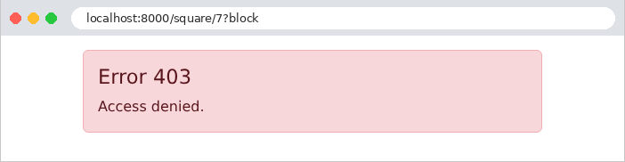

7. Der Lebenszyklus einer Anfrage
Zwischen dem Eintreffen einer Anfrage und dem Versand ihrer Antwort führt der [Symfony]-Kernel (die Klasse [HttpKernel]) mehrere Schritte aus, und bei jedem Schritt veröffentlicht er ein Ereignis , auf das die Anwendung über einen Listener reagieren kann. Einigen davon sind wir bereits begegnet: den Listenern für [kernel.request] und [kernel.response] (Beispiele 03, 16, 22), für [kernel.exception] (Beispiele 08 und 12) und den Argument-Resolvern (Beispiel 12). Dieses Kapitel führt sie alle in einem einzigen Beispiel zusammen, das bei jedem Schritt eine Meldung in der Konsole ausgibt, damit Sie die Reihenfolge beobachten können:
- 1 und 2. [kernel.request]: Die Anfrage ist gerade eingetroffen. Alle Listener für dieses Ereignis werden in absteigender Reihenfolge ihrer Priorität aufgerufen. Einer davon ist der Routing-Listener von [Symfony] (der Listener [RouterListener] mit Priorität 32): Er sucht die Route, die zur URL und zur Methode passt, und speichert ihren Namen und ihre Parameter in den Anfrageattributen; passt keine, wirft er eine [NotFoundHttpException] (404) aus. Ein Listener mit einer Priorität über 32 (1) läuft vor dem Routing und kennt die Route nicht; ein Listener mit niedrigerer Priorität (2) kennt sie. Ein [kernel.request]-Listener kann auch selbst die Antwort liefern ([$event->setResponse(...)]): In diesem Fall wird die Aktion nicht aufgerufen;
- 3. [kernel.controller]: Die Aktion wurde ausgewählt, aber noch nicht aufgerufen. Ein Listener kann die Aktion untersuchen (ihre Attribute, etwa die von [PHP]) oder sie ersetzen;
- 4. Die Argument-Resolver berechnen die Parameter der Aktion (Beispiel 12), anschließend wird das Ereignis [kernel.controller_arguments] veröffentlicht;
- 5. Die Aktion und die View, die sie erzeugt. (Gibt die Aktion kein [Response]-Objekt zurück, erlaubt ein zusätzliches Ereignis, [kernel.view], einem Listener, die Antwort anhand dessen zu erstellen, was die Aktion zurückgegeben hat.);
- 6 und 7. [kernel.response]: Die Antwort ist fertig. Jeder Listener kann sie in absteigender Reihenfolge der Priorität ändern (einen Header, ein Cookie hinzufügen);
- 8. [kernel.terminate], veröffentlicht nach dem Senden der Antwort an den Browser (das ist der [$kernel->terminate(...)]-Aufruf aus der Datei [public/index.php], Beispiel 01). Listener können die Antwort nicht mehr ändern: Sie dienen für Aufgaben, die warten können (ein Log schreiben, eine E-Mail senden usw.), ohne den Benutzer warten zu lassen;
- x. [kernel.exception]: Eine Exception, die in irgendeiner Phase geworfen wird (von einem Listener, einem Resolver, der Aktion oder der View), unterbricht die Verarbeitung; sie wird von den Listenern für dieses Ereignis behandelt. Der erste Listener, der eine Antwort liefert, beendet die Suche. Diese Antwort durchläuft dann [kernel.response], genau wie eine normale Antwort. Liefert keiner der Listener der Anwendung eine, erzeugt [Symfony] die Fehlerseite: im Debug-Modus detailliert, sonst minimal.
Das entspricht den Filtern in [Java] und den Interceptors in [Spring MVC], den Action-Filtern in [ASP.NET Core MVC], den Funktionen [before_request] / [after_request] von [Flask] und der Middleware von [Laravel]. Der Unterschied liegt in ihrer Struktur: Eine Middleware-Komponente umschließt die übrige Verarbeitung (sie ruft [$next] auf und sieht somit die Anfrage davor und die Antwort danach, im selben Code), während ein Listener auf ein Ereignis reagiert; um vor und nach der Aktion zu agieren, muss man zwei Ereignisse abonnieren. Dafür kann ein Listener in einer bestimmten Phase eingreifen (nach dem Routing, nach der Auswahl der Aktion usw.), und die Reihenfolge der Listener wird durch eine Zahl bestimmt – die Priorität.
7.1. Beispiel 24: Die Phasen der Anfrageverarbeitung
Die Anwendung hat nur eine einzige Aktion, die das Quadrat einer ganzen Zahl berechnet: [/square/7]. Abhängig von der URL gelingt sie oder schlägt auf verschiedene Weise fehl. Die Meldungen werden von der Funktion [error_log] in [PHP] in die Server-Konsole geschrieben, die der Entwicklungsserver ([php -S]) anzeigt.
7.1.1. Vor und nach allem anderen: src/EventListener/Logger.php
Eine einzelne Klasse kann auf mehrere Ereignisse reagieren: Das Attribut [#[AsEventListener]] wird dann auf jede der betreffenden Methoden angewendet.
- Zeilen 16–23: Meldung Nr. 1 mit der Anfrage ([getRequestUri()]: der Pfad und die Parameter). Priorität 100 setzt den Listener vor das Routing: In [Symfony] ist noch nichts passiert;
- Zeilen 26–30: Meldung Nr. 7, nachdem alles andere abgeschlossen ist. Eine Priorität von -100 setzt den Listener hinter die der Anwendung und von [Symfony] (von denen die meisten eine Priorität zwischen -10 und 10 haben). [getStatusCode()] ist der Antwortcode.
Ein solcher Listener kennt die gewählte Route nicht, da das Routing noch nicht stattgefunden hat. Er dient für Verarbeitungen, die für alle Anfragen gelten: Logging, Behandlung eines Proxys (die Fallstudie erwähnt das im Zusammenhang mit der IP-Adresse der Clients) ...
7.1.2. Nach dem Routing: src/EventListener/Block.php
- Zeile 13: die Standardpriorität 0: Der Listener wird nach dem Routing aufgerufen;
- Zeile 20: Meldung Nr. 2. Das Routing hat den Namen der ausgewählten Route im Attribut [_route] der Anfrage gespeichert (und ihre Parameter in den gleichnamigen Attributen, Beispiel 12);
- Zeilen 21–24: Der Parameter [?block] der URL ([has] prüft sein Vorhandensein) löst einen 403-Fehler aus (Forbidden, Zugriff verweigert): Die Exception [AccessDeniedHttpException] beendet die Verarbeitung.
7.1.3. Vor der Aktion: src/EventListener/Timed.php und Timing.php
Wir möchten nur bestimmte Aktionen messen – die, bei denen es nötig ist. Dazu genügt es, sie mit einem eigenen Attribut in [PHP] zu markieren:
Ein Attribut ist eine gewöhnliche Klasse, die selbst mit dem Attribut [#[Attribute]] markiert ist; [Attribute::TARGET_METHOD] gibt an, dass es auf eine Methode angewendet wird. Dieses Attribut trägt keine Informationen: Allein sein Vorhandensein zählt.
- Zeilen 17–28: das [kernel.controller]-Ereignis. Die Methode [getAttributes] des Ereignisses liefert die [PHP]-Attribute einer bestimmten Klasse, die die Aktion (und ihre Klasse) trägt: Eine leere Liste bedeutet, dass die Aktion nicht markiert ist, und der Listener tut nichts. Andernfalls folgen Meldung Nr. 3 und die Startzeit, gespeichert in den Anfrageattributen (Beispiel 12). [hrtime(true)] ist eine präzise Uhr in Nanosekunden, die zum Messen von Dauern gedacht ist;
- Zeilen 30–36: Meldung Nr. 6 zu [kernel.response] mit dem Antwortcode, sofern die Messung gestartet wurde. Die Standardpriorität 0 setzt diesen Listener vor den von [Logger] (-100);
- Zeilen 40–49: das [kernel.terminate]-Ereignis, das nach dem Senden der Antwort veröffentlicht wird: Meldung Nr. 8 mit der seit Meldung Nr. 3 verstrichenen Zeit. Die Prüfung in Zeile 45 stellt sicher, dass die Messung gestartet wurde: Das Ereignis wird für alle Anfragen veröffentlicht, auch für solche, die die Aktion nicht erreicht haben.
So implementiert [Symfony] selbst einige seiner Attribute: [#[IsGranted]], das wir im nächsten Kapitel besprechen, wird von einem Listener auf [kernel.controller_arguments] gelesen, der den Zugriff auf die Aktion verweigert, wenn der Benutzer nicht die verlangte Berechtigung hat.
7.1.4. Die Argumente der Aktion: src/Binding/IntegerResolver.php und der Controller
Ein Argument-Resolver (Beispiel 12), der Meldung Nr. 4 schreibt. Er akzeptiert beliebigen Text und wandelt ihn in eine ganze Zahl um, oder in [null] , wenn es keine ist ([filter_var] liefert [false]): Anders als eine Einschränkung wie [requirements] (Beispiel 02), die für [/square/abc] eine 404-Seite liefern würde, entscheidet hier die Aktion über das Ergebnis.
- Zeile 20: Die Aktion ist mit unserem Attribut [#[Timed]] markiert;
- Zeile 21: Der Parameter [$n] wird von unserem Resolver geliefert (Attribut [#[ValueResolver]], Beispiel 12);
- Zeilen 24–26: ein Parameter, der keine ganze Zahl ist: Fehler 400 (Bad Request), ausgelöst durch die Exception [BadRequestHttpException];
- Zeilen 27–29: Die Zahl 13 löst einen „unerwarteten“ Fehler aus. [DomainException] ist eine Exception-Klasse aus der Standardbibliothek von [PHP];
- Zeile 30: der Normalfall. Die View [calc/result.html.twig] zeigt einfach das Ergebnis an.
7.1.5. Fehlerbehandlung: src/EventListener/ErrorPage.php
- Zeilen 15–17: der Listener für [kernel.exception] mit Priorität -10. [Symfony] registriert für dieses Ereignis zwei Listener: Der erste mit Priorität 0 protokolliert die Exception; der zweite mit Priorität -128 erzeugt die Fehlerseite von [Symfony]. Unserer liegt zwischen beiden: Die Exception wird protokolliert, dann zeigen wir die Seite an;
- Zeile 21: Der Listener ist kein Controller und hat nicht die Methode [render] von [AbstractController]: Er erhält die [Twig]-Engine selbst (die Klasse [Twig\Environment]), deren Methode [render] die gerenderte Seite als String zurückgibt;
- Zeilen 28–32: alle HTTP-Fehler: eine URL ohne Route (404), eine abgelehnte Methode (405) und die Exceptions [AccessDeniedHttpException] (403) und [BadRequestHttpException] (400) ... implementieren das Interface [HttpExceptionInterface] und tragen ihren Code ([getStatusCode()]). Dieser einzelne Test ersetzt daher alle [Symfony]-Fehlerseiten durch unsere;
- Zeilen 33–36: eine Exception der Klasse [DomainException] (oder ihrer Unterklassen; siehe Beispiel 08): ein „unerwarteter“ Fehler, umgewandelt in eine „eigene“ Fehlerseite mit dem Statuscode 500 (Internal Server Error). Die Meldung der Exception wird in der Konsole angezeigt, aber nicht auf der Seite: Sie kann interne Details enthalten, die für den Benutzer nicht relevant sind;
- Zeilen 37–39: Die anderen Exceptions werden von [Symfony] behandelt;
- Zeilen 42–43: [setResponse] liefert die Antwort, die die Exception ersetzt und die Weitergabe des Ereignisses stoppt: Nachfolgende Listener (die Fehlerseite von [Symfony]) werden nicht aufgerufen.
Die Fehlerseite erhält den Fehlercode und zeigt eine passende Meldung an:
- Zeile 8: ein in der View definiertes assoziatives Array ([{key: value, ...}]), aus dem das Element mit dem Index [code] abgerufen wird; der Operator [??] liefert einen Standardwert, wenn dieses Element nicht existiert.
Es gibt noch einen weiteren, noch einfacheren Weg, Fehlerseiten zu ersetzen, ohne einen Listener zu schreiben: Eine View mit dem Namen [templates/bundles/TwigBundle/Exception/error404.html.twig] ersetzt die 404-Fehlerseite, und ebenso für jeden Code ([error.html.twig] für alle anderen). Diese Views werden nur in der Produktion verwendet; der Debug-Modus behält seine detaillierten Seiten (Sie können sie im Debug-Modus unter [/_error/404] in der Vorschau ansehen, sofern Sie die Routen [@FrameworkBundle/Resources/config/routing/errors.php] importiert haben). Ein Listener dagegen erlaubt jede Art der Behandlung (eine JSON-Antwort, eine Weiterleitung usw.) in allen Modi.
7.1.6. Ausführung
Normalfall, [/square/7]:

Die Server-Konsole zeigt die acht Schritte der Reihe nach an (die Zeitangaben, die [php -S] am Anfang der Zeilen einfügt, wurden entfernt):
Die Zeile [[info]] stammt vom Routing von [Symfony]: Das ist dessen Log (log). Ohne eine Logging-Bibliothek (die am häufigsten verwendete ist [Monolog], installiert durch [composer require logger]) verwendet [Symfony] ein minimales Log, das in die Konsole schreibt. Die letzte Zeile ist das Log des Entwicklungsservers, das nach Abschluss der Anfrage geschrieben wird. Ein blockierter Zugriff, [/square/7?block]:

Der Listener [Block] hat eine Exception ausgelöst: Die Aktion wurde nicht ausgewählt, ihre Argumente wurden nicht berechnet, und sie wurde nicht aufgerufen. Die Exception wurde von [Symfony] protokolliert und dann von unserem Listener in eine Antwort umgewandelt; diese Antwort durchlief [kernel.response]. Das Ereignis [kernel.terminate] wurde veröffentlicht, aber [Timing] hat nichts angezeigt, da die Messung nicht gestartet war. Ein Parameter, der keine ganze Zahl ist, [/square/abc]:

Diesmal wurde die Aktion mit [null] aufgerufen (was als leere Zeichenkette dargestellt wird: [square()]), und diese Aktion hat den Fehler 400 ausgelöst. Ein „unerwarteter“ Fehler, [/square/13]:

Die Exception wurde von unserem Listener behandelt: Der Benutzer sieht die „eigene“ Fehlerseite, nicht die detaillierte Seite, obwohl der Debug-Modus aktiv ist. Sie wurde dennoch protokolliert, und zwar mit dem Level [critical] (ein HTTP-Fehler ist lediglich ein [error]): Wie [Laravel] unterscheidet [Symfony] zwischen dem Protokollieren einer Exception im Log und der Antwort, die sie erzeugt. Schließlich eine URL, die keiner Route entspricht, [/unknown]:
Das Routing ist fehlgeschlagen: kein Listener danach, keine Aktion. Die 404-Seite ist unsere eigene:
Konzentrieren wir uns auf das Wesentliche. Kernel-Ereignis-Listener sind der richtige Ort für Prüfungen, die vielen Aktionen gemeinsam sind (Ist der Benutzer angemeldet? Hat er die Berechtigung, auf diese Aktion zuzugreifen?): Sie bilden die Grundlage der Sicherheitskomponente von [Symfony], die das nächste Kapitel für die Authentifizierung verwendet. Die Ereignis-Listener für [kernel.exception] und die Fehler-Views stellen sicher, dass der Benutzer unabhängig vom Fehler nie eine technische Seite sieht: Die Fallstudie macht sich das zunutze.